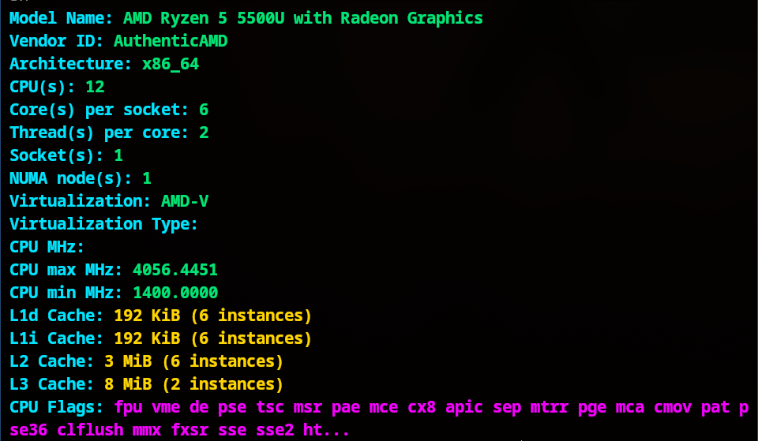

System Info Script
A light-weight Bash script that gathers and displays essential system information, hardware
details, and resource usage in a readable format.
Tech Stack:
Bash
Linux
CLI
This project is a collection of Linux Bash scripts designed for system administration and
monitoring. It focuses on providing quick diagnostics for system hardware and software
details.
Included Scripts:
- system_info_colorfull.sh: Comprehensive dashboard with OS
detection, Kernel, Uptime, CPU, RAM, GPU, and Network Status.
- system_info.sh: The standard plain-text version suitable for
logging or simple terminal viewing.
- CPU_info_colorfull.sh: Specialized script for detailed CPU analysis
and specifications.
Key Features:
- System Dashboard: Real-time overview of core system metrics.
- Hardware Analysis: Detailed breakdown of CPU and Memory
specifications.
- Flexible Output: Choose between visual-friendly colorful output or
log-friendly plain text.
Screenshots:
CPU Analysis
